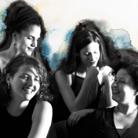
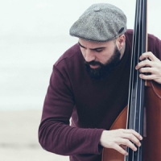
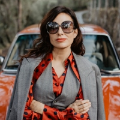

Four women

con Natalia Ruciero (voz y percusión), Laura Domínguez (piano y voces), Blanca Barranco (contrabajo y voces) y Virginia Moreno (clarinete y voces)
Viernes 10 de septiembre, 21h
Bodegas Alvear
Alba Careta Group
con Alba Careta (trompeta y voz), Lucas Martínez (saxo tenor), Roger Santacana (piano), Giusepe Campisi (contrabajo) y Josep Cordobés (batería)
Viernes 10 de septiembre, 23h
Bodegas Alvear
David Ruiz Septeto

con David Ruiz (contrabajo), Shayam Fathi (batería), Marcos Collado (guitarra), Gabriel Peso (piano), Jorge Vistel (trompeta) y Roberto Nieva (saxofón)
Sábado 11 de septiembre, 21h
Bodegas Alvear
Dry Martina

con Laura Insausti (voz), Jaime Fernández (trombón), Stefano Tomaselli (saxo), Nacho Loring (trompeta), Juan Baca (contrabajo) y Pablo Guzmán (guitarra)